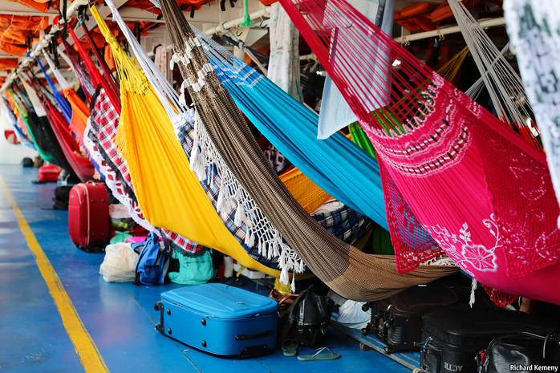

2020-11-30T14:11:18+00:00
巴西
丛林中的包裹
电子商务如何在雨林中运作
看到“犹大雄狮”号时，你不会联想到“电子商务”。它下层的甲板上有钩子，能挂467张吊床，乘客们可以睡在那儿，度过沿亚马逊河而上的三天航程，从人口200万的城市玛瑙斯（Manaus）去往种木薯的小镇尤里尼（Uarini）。上层的甲板上还有更多吊床，此外还有为罪人准备的酒吧和为圣人准备的小教堂。货舱散发出阵阵鱼腥味。但是当亚马逊流域最大的百货公司Bemol开始为雨林地区的顾客送货时，这样的三层客船是它首选的运输方式。
Bemol于1942年创立，创始人三兄弟的祖父是1887年从摩洛哥来到巴西的犹太移民。它一直以传统方式在它位于玛瑙斯的大卖场销售冰箱和电视机，直到2018年创始人的孙儿之一丹尼斯·米涅夫（Denis Minev）接手公司。他怀疑Bemol遗漏了亚马逊及其支流沿岸成千上万的顾客，于是决定把生意做到他们那里。
但是在热带雨林投递包裹很难，成本也很高。（亚马逊公司在亚马逊河流域几乎不提供服务。）偏远地区的消费者要么得支付高达产品价格30%的运费、花一个月或更长时间等邮政服务送货，要么得花钱花时间去玛瑙斯跑一趟。米涅夫做出了一个听起来似乎不可能实现的承诺：网上下单，一周内送达，价钱不会比在玛瑙斯多一分。
Bemol管自己的解决办法叫“卡波科洛”（caboclo）电子商务。“卡波科洛”是对巴西的土著和欧洲人混血后裔的称呼，现在这个词也意指传统和现代的混合。米涅夫曾在自己家族拥有的一家燃气公司工作，他很清楚亚马逊地区的物流挑战之大。他没有冒着撞船事故、燃油被盗和高额债务的风险去买一支船队，而是将物流外包给刷着鲜亮油漆、在亚马逊流域运送居民和物资的渡船。
近日的一个周二，“犹大雄狮”号停泊在玛瑙斯港口，甲板水手们把几百箱啤酒、几千盒鸡蛋、几十只冻鸡和三只咯咯叫的活鸡塞进了货舱。此外还有Bemol自家生产的几乎一模一样的床垫要送到不同的城镇。与船主的合同是口头的，货物进出是用纸笔记录的，错漏时有发生。如果商品丢失，比如智能手机可能不翼而飞，Bemol会承担损失。每条航线只有几条船及船员在跑。“要是我跟他们所有人都打起来，就没人帮我们送货了。”负责Bemol物流的弗雷德·盖尔沃（Fred Galvão）说。
为了鼓励亚马逊居民开始第一次网购，Bemol在它推出“卡波科洛”电子商务的每个城镇的广场上都安装了Wi-Fi。它把商品目录推送到用户的智能手机上，并为下订单的用户提供免费流量。和亚马逊公司一样，Bemol根据客户提供的数据向客户推送广告。
它还发明了一些适合该地区的策略。积蓄不足或没有信用卡的亚马逊人可以用零利率贷款购物，最低额度为150雷亚尔（26美元）；Bemol高达85%的线上销售都是通过这种方式支付的。对使用互联网感到不放心的顾客可以请药店和流动加油站的服务员帮忙下单或投诉。Bemol允许退货，但鼓励顾客接受代金券。“没有实体设施的传统电子商务模式在亚马逊行不通。”米涅夫说。
他的“卡波科洛”模式似乎行得通。公司于去年4月起在玛瑙斯河下游100公里的奥塔兹（Autazes）试点运营，第一个月就收到了113份订单，价值7.3万雷亚尔。到今年2月，Bemol已经扩展到几十个城镇。它2月的销售额为260万雷亚尔。新冠疫情爆发后，生意红火起来。Bemol的电子商务收入在6月达到了1050万雷亚尔。“亚马逊公司亏损了好多年，”米涅夫说，“而我们已经盈利了。”
“犹大雄狮”号就没那么幸运了。疫情一开始，它就在港口停了两周，救护船送来了新冠患者和在途中死亡的人的遗体。它在4月恢复航行，但载客量减少了一半。船长理查德·拉塞特（Richard Lacet）从他父亲那里继承了这条船，他通过提高运货价格来弥补收入损失，引得往上游送鸡的商人和往下游送木薯粉的农民怨声载道。但他表示，为自己的独立货舱支付固定费用的Bemol“开始改变整个生意”。电子商务可以让“雄狮”号继续航行。
2020-11-30T14:11:18+00:00
Brazil
Bundles in the jungle
How e-commerce works in the rainforest
WHEN YOU behold the
Bemol was founded in 1942 by three grandsons of a Moroccan Jewish immigrant who arrived in Brazil in 1887. It sold fridges and televisions in the traditional way from its megastores in Manaus until 2018, when one of the founders’ grandsons, Denis Minev, took over. He suspected there were hundreds of thousands of customers up and down the Amazon and its tributaries that Bemol wasn’t reaching and decided to go to them.
But delivering parcels in the rainforest is difficult and expensive. (Amazon the company barely serves its namesake river.) Consumers in far-flung places either had to pay up to 30% of the product’s price for shipping and wait a month or longer for the postal service to deliver it or spend money and time on shopping trips to Manaus. Mr Minev made what sounded like an impossible promise: to deliver an order placed online within a week for not a
Bemol calls its answer to those problems
As the
To encourage Amazonians to place their first online orders, Bemol installed Wi-Fi in the plaza of every town where it launched
It invented some tactics to suit the region. Amazonians who lack savings or credit cards use zero-interest loans starting at 150 reais ($26) to finance their purchases; a whopping 85% of Bemol’s online sales are paid for this way. Shoppers who are uneasy about using the internet can place orders and lodge complaints with an attendant’s help at chemists and floating petrol stations. Bemol allows returns, but encourages customers to accept vouchers instead. “The traditional e-commerce model without a physical presence doesn’t work in the Amazon,” says Mr Minev.
His
The
2020-11-30T14:11:18+00:00
巴西
叢林中的包裹
電子商務如何在雨林中運作
看到“猶大雄獅”號時，你不會聯想到“電子商務”。它下層的甲板上有鉤子，能掛467張吊床，乘客們可以睡在那兒，度過沿亞馬遜河而上的三天航程，從人口200萬的城市瑪瑙斯（Manaus）去往種木薯的小鎮尤里尼（Uarini）。上層的甲板上還有更多吊床，此外還有為罪人準備的酒吧和為聖人準備的小教堂。貨艙散發出陣陣魚腥味。但是當亞馬遜流域最大的百貨公司Bemol開始為雨林地區的顧客送貨時，這樣的三層客船是它首選的運輸方式。
Bemol於1942年創立，創始人三兄弟的祖父是1887年從摩洛哥來到巴西的猶太移民。它一直以傳統方式在它位於瑪瑙斯的大賣場銷售冰箱和電視機，直到2018年創始人的孫兒之一丹尼斯·米涅夫（Denis Minev）接手公司。他懷疑Bemol遺漏了亞馬遜及其支流沿岸成千上萬的顧客，於是決定把生意做到他們那裡。
但是在熱帶雨林投遞包裹很難，成本也很高。（亞馬遜公司在亞馬遜河流域幾乎不提供服務。）偏遠地區的消費者要麼得支付高達產品價格30%的運費、花一個月或更長時間等郵政服務送貨，要麼得花錢花時間去瑪瑙斯跑一趟。米涅夫做出了一個聽起來似乎不可能實現的承諾：網上下單，一周內送達，價錢不會比在瑪瑙斯多一分。
Bemol管自己的解決辦法叫“卡波科洛”（caboclo）電子商務。“卡波科洛”是對巴西的土著和歐洲人混血後裔的稱呼，現在這個詞也意指傳統和現代的混合。米涅夫曾在自己家族擁有的一家燃氣公司工作，他很清楚亞馬遜地區的物流挑戰之大。他沒有冒着撞船事故、燃油被盜和高額債務的風險去買一支船隊，而是將物流外包給刷着鮮亮油漆、在亞馬遜流域運送居民和物資的渡船。
近日的一個周二，“猶大雄獅”號停泊在瑪瑙斯港口，甲板水手們把幾百箱啤酒、幾千盒雞蛋、幾十隻凍雞和三隻咯咯叫的活雞塞進了貨艙。此外還有Bemol自家生產的幾乎一模一樣的床墊要送到不同的城鎮。與船主的合同是口頭的，貨物進出是用紙筆記錄的，錯漏時有發生。如果商品丟失，比如智能手機可能不翼而飛，Bemol會承擔損失。每條航線只有幾條船及船員在跑。“要是我跟他們所有人都打起來，就沒人幫我們送貨了。”負責Bemol物流的弗雷德·蓋爾沃（Fred Galvão）說。
為了鼓勵亞馬遜居民開始第一次網購，Bemol在它推出“卡波科洛”電子商務的每個城鎮的廣場上都安裝了Wi-Fi。它把商品目錄推送到用戶的智能手機上，並為下訂單的用戶提供免費流量。和亞馬遜公司一樣，Bemol根據客戶提供的數據向客戶推送廣告。
它還發明了一些適合該地區的策略。積蓄不足或沒有信用卡的亞馬遜人可以用零利率貸款購物，最低額度為150雷亞爾（26美元）；Bemol高達85%的線上銷售都是通過這種方式支付的。對使用互聯網感到不放心的顧客可以請藥店和流動加油站的服務員幫忙下單或投訴。Bemol允許退貨，但鼓勵顧客接受代金券。“沒有實體設施的傳統電子商務模式在亞馬遜行不通。”米涅夫說。
他的“卡波科洛”模式似乎行得通。公司於去年4月起在瑪瑙斯河下游100公里的奧塔茲（Autazes）試點運營，第一個月就收到了113份訂單，價值7.3萬雷亞爾。到今年2月，Bemol已經擴展到幾十個城鎮。它2月的銷售額為260萬雷亞爾。新冠疫情爆發後，生意紅火起來。Bemol的電子商務收入在6月達到了1050萬雷亞爾。“亞馬遜公司虧損了好多年，”米涅夫說，“而我們已經盈利了。”
“猶大雄獅”號就沒那麼幸運了。疫情一開始，它就在港口停了兩周，救護船送來了新冠患者和在途中死亡的人的遺體。它在4月恢復航行，但載客量減少了一半。船長理查德·拉塞特（Richard Lacet）從他父親那裡繼承了這條船，他通過提高運貨價格來彌補收入損失，引得往上游送雞的商人和往下游送木薯粉的農民怨聲載道。但他表示，為自己的獨立貨艙支付固定費用的Bemol“開始改變整個生意”。電子商務可以讓“雄獅”號繼續航行。